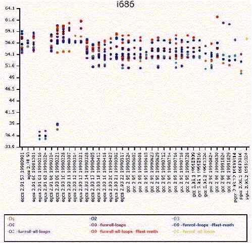
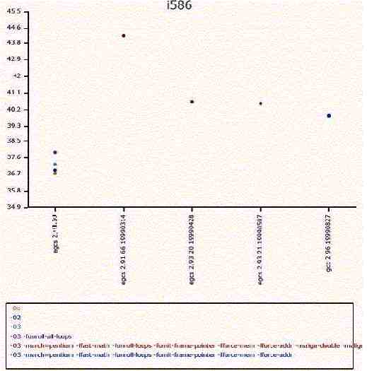
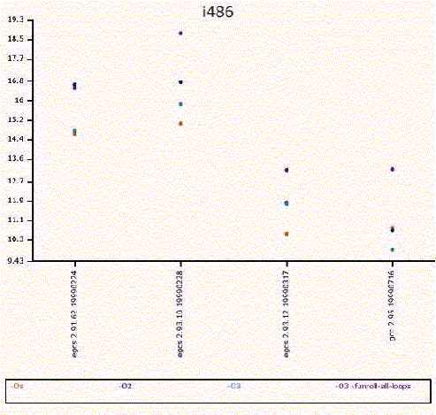

Глава 4 Общая системная оптимизация
В этой главе
Общие вопросы оптимизации
Linux
|
|
Краткий обзор
На этой стадии вы должны иметь настроенный и защищенный Linux
сервер. Наш сервер содержит наиболее необходимые пакеты и программы, которые
должным образом настроены, чтобы правильно работать. Прежде чем продолжить
дальше и устанавливать сервисы нужные пользователям мы займемся настройкой
нашего сервера. То, что мы будем делать дальше относится ко всей системе в
целом. Эти настройки будут влиять и на работу сервисов, которые мы установим
позже. Если в вашем компьютере не стоит x386 процессор, то Red Hat не настроен
под вас оптимальным образом. Эта глава проведет вас через различные шаги
настройки сервера и файловой системы под конкретный тип процессор, объем память
и сеть.
Файл "/etc/profile".
Файл "/etc/profile" включает системное окружение всех
исполняемых программ. Все настройки добавленные в этот файл отражаются на
переменные окружения вашей системы. Так, помещение в этот файл флагов
оптимизации - это хорошая идея. Чтобы выжать максимальную эффективность из ваших
программ под x86, вы можете использовать при компиляции флаг -09, обозначающий
полную оптимизацию. Многие программы содержат в Makefile опцию -02, но -09
обозначает высший уровень оптимизации при которой размер файла увеличивается, но
увеличивается и скорость выполнения.
Замечание. Использование опции -09 не всегда приводит к
наилучшим результатам. Это верно для x686 и выше процессоров, но для более
старых процессоров не всегда так.
При компиляции можно использовать опцию -fomit-frame-pointer,
которая говорит, что для доступа к переменным нужно использовать стек. К
сожалению, с этой опцией практически невозможна отладка. Можно использовать
переключатель -mcpu=cpu_type и -march=cpu_type при помощи которых создается код,
оптимизированный для определенного CPU. Полученный код будет работать только на
заданном процессоре или более новом. Приведенные ниже оптимизационные флаги
запишите в файл /etc/profile. Они влияют только на программы, которые вы будете
компилировать в дальнейшем и не оказывают на какого действия на существующую
систему.
Шаг 1.
Для CPU i686 или PentiumPro, Pentium II, Pentium III
В файл
"/etc/profile" добавьте следующую строку:
CFLAGS='-O9 -funroll-loops -ffast-math -malign-double -mcpu=pentiumpro
-march=pentiumpro -fomit-frame-pointer -fno-exceptions'
Для CPU i586 или Pentium
В файл "/etc/profile" добавьте
следующую строку:
CFLAGS='-O3 -march=pentium
-mcpu=pentium -ffast-math -funroll-loops -fomit-frame-pointer -fforce-mem
-fforce-addr -malign-double -fno-exceptions'
For CPU i486
В файл "/etc/profile" добавьте следующую
строку:
CFLAGS='-O3 -funroll-all-loops
-malign-double -mcpu=i486 -march=i486 -fomit-frame-pointer
-fno-exceptions'
Шаг 2.
После выбора типа процессора добавьте в строку export файла
"/etc/profile" переменные "CFLAGS LANG LESSCHARSET"
export PATH PS1 HOSTNAME HISTSIZE HISTFILESIZE USER LOGNAME MAIL INPUTRC
CFLAGS LANG LESSCHARSET
Шаг 3.
Выйдете из системы и вновь в нее войдете, чтобы опции
определенные переменной CFLAGS вступили в силу и все программы и другие
"configure" утилиты стали ее учитывать. Оптимизация под Pentium (Pro/II/III)
будет работать только с компиляторами egcs и pgcc. Egcc уже установлен на вашем
сервере, поэтому об этом думать не надо.
Ниже приведено описание опций, которые мы использовали:
-funroll-loops
Выполняется оптимизация развертыванием
циклов. Это осуществляется для циклов число итераций которых может быть
определено во время компиляции или во время выполнения.
-funroll-all-loops
Выполняется оптимизация
развертыванием циклов. Развертывает все циклы и обычно программы
скомпилированные с этой опцией медленнее запускаются.
-ffast-math
Эта опция позволяет GCC нарушать
некоторые ANSI или IEEE правила и/или спецификации в интересах оптимизации кода
по скорости выполнения. Например, это позволяет компилятору предполагать, что
параметры к функции sqrt - не-отрицательные числа и что значения не с плавающей
запятой являются NaNs.
-malign-double
Контролирует, выравнивает ли GCC
double, long double и long long переменные на двусловной границе или однословной
границе. Выравнивание double переменных на двусловной границе создает код,
который выполняется на "Pentium" процессорах несколько быстрее, расходуя больше
памяти.
-mcpu=cpu_type
Определяет значание типа процессора
при планировании используемых инструкций. При определении конкретного типа CPU,
GCC будет использовать инструкции специфичные для него. Когда эта опция не
определена, никогда не будут использоваться команды не работающие на i386
процессоре. "I586" эквивалентен "Pentium", "i686" эквивалентен "Pentium Pro".
"K6" - AMD.
-march=cpu_type
Создает инструкции для CPU cpu_type.
Выбор типов процессоров такой же как и для mcpu. Кроме того, использование
`-march=cpu_type' подразумевает и `- mcpu=cpu_type'.
-fforce-mem
принуждает копировать операнды хранящиеся
в памяти в регистры перед выполнением арифметических операций над ними. В
результате получается более лучший код в котором все ссылки на ячейки памяти
потенциально общие подвыражения. Когда они не являются общими подвыражениями, то
комбинации команд должны устранить отдельную загрузку регистра.
-fforce-addr
вынуждает копировать постоянные адреса
памяти в регистры перед выполением арифметических операций над ними. В
результате может создаваться более хороший код, так же как и при
-fforce-mem.
-fomit-frame-pointer
Не сохранять указатель на кадр
(frame pointer) в регистре для функций, которые не нуждаются в этом. Это
позволяет избежать инструкций на сохранение, определение и восстановление
указателя на кадр (frame pointer); в то же время освобождая регистры для других
функций. Это делает невозможным отладку на большинстве машин.
Замечание. Все возможности оптимизации, которые описаны
в этой книге относятся к семейству процессоров Pentium II/III. Так, что вы
должны при необходимости изменить флаги компиляции под ваш тип
процессора.
Результаты тестирования быстродействия, суммирование по
архитектурам.
В зависимости от типа вашего процессора и версии компилятора
(gcc/egcs) опции оптимизации могут отличаться. Графики приведенные ниже помогут
вам выбрать лучшие для вас флаги компиляции.
Версия компилятора установленного в Red Hat 6.1 и 6.2 - egcs
2.91.66. Но перед выбором опций оптимизации обязательно проверьте его версию,
используя команду:
egcs -version
Все результаты тестирования могут быть получены с домашней
страницы GCC, находящейся по адресу http://egcs.cygnus.com/.
Сейчас приведем пример:
Для CPU Pentium II/III (i686) и компилятора egcs-2.91.66
лучшими опциями оптимизации будут:
CFLAGS='-O9
-funroll-loops -ffast-math -malign-double -mcpu=pentiumpro -march=pentiumpro
-fomit-frame-pointer -fno-exceptions'
Для CPU pentium (i586) с компилятором egcs-2.91.66 лучшими
опциями оптимизации будут:
CFLAGS='-O3
-march=pentium -mcpu=pentium -ffast-math -funroll-loops -fomit-frame-pointer
-fforce-mem -fforce-addr -malign-double -fno-exceptions'
Для CPU i486 с компилятором egcs-2.91.66 лучшими опциями
оптимизации будут:
CFLAGS='-O3 -funroll-all-loops
-malign-double -mcpu=i486 -march=i486 -fomit-frame-pointer
-fno-exceptions'
Параметр "bdflush".
Файл bdflush вплотную связан с операциями в подсистеме
виртуальной памяти ядра Linux и имеет небольшое влияние на использование диска.
Этот файл (/proc/sys/vm/bdflush) контролирует операции демона ядра bdflush. Мы
используем этот файл для улучшения производительности файловой системы.
Изменяя некоторые значения принятые по умолчанию, добиваемся
чтобы система стала более "отзывчивой", например, она ждет немного большее при
осуществлении записи на диск и избегает таким образом некоторых конфликтов
доступа.
По умолчанию bdflush в Red Hat Linux использует следующие
значения:
"40 500 64 256 500 3000 500 1884
2"
Для изменения значений в bdflush введите следующие команды на
вашем терминале:
Под Red Hat 6.1
[root@deep
/]# echo "100 1200 128 512 15 5000 500 1884 2">/proc/sys/vm/bdflush
Вы можете добавить эту команду в /etc/rc.d/rc.local, чтобы она
выполнялась каждый раз при загрузке компьютера.
Под Red Hat 6.2
Редактируйте файл "/etc/sysctl.conf" и добавьте следующую
строку:
# Improve file system
performance
vm.bdflush = 100 1200 128 512 15 5000 500 1884 2
Вы должны перезагрузить ваши сетевые устройства, чтобы
изменения вступили в силу.
[root@deep /]# /etc/rc.d/init.d/network restart
Setting network parameters [ OK ]
Bringing up interface lo [ OK ]
Bringing up interface eth0 [ OK ]
Bringing up interface eth1 [ OK ]
В вышеприведенном примере согласно файлу
"/usr/src/linux/Documentation/sysctl/vm.txt" первый параметр 100% определяет
максимальное число грязных буферов в кэше буферов. Грязные означают то, что
содержимое буфера все еще должно быть записано на диск. Установка этому
параметру высокого значения означает, что Linux в течении долгого времени может
задерживать запись на диск, но в то же время это означает, что будет необходимо
произвести много операций ввода-вывода одновременно, когда памяти станет мало.
Низкое значение будет распределять операции I/O более равномерно.
Второй параметр (1200) (ndirty) определяет максимальное число
грязных буферов которые могут быть одновременно записаны. Высокое значение
означает отсроченный, пульсирующий I/O, в то время как маленькое значение может
приводить к нехватке памяти, когда bdflush не просыпается достаточно часто.
Третье значение (128) (nrefill) определяет число буферов,
которые bdflush будет добавлять в список свободных при вызове функции
refill_freelist(). Необходимо распределять свободные буфера заранее, так как они
имеют часто размер отличный от размера страницы памяти и некоторый учет
системных ресурсов нужно делать заранее. Чем выше число, тем больше памяти будет
потрачено впустую и тем реже будет необходимо вызывать refill_freelist(). Когда
refill_freelist() (512) натолкнется на больше чем nref_dirt грязных буферов то
просыпается bdflush().
age_buffer (50*HZ) и age_super parameters
(5*HZ) обозначают максимальное время, которое Linux ждет перед записью грязных
буферов на диск. Значение выражено в мигах (clockticks), число мигов в секунду =
100. age_buffer
это возраст блоков данных, а age_super - возраст метаданных файловой системы.
Пятый (15) и последние два (1884 и 2) не используются системой, так что мы
оставим значения по умолчанию.
Замечание. Читайте
"/usr/src/linux/Documentation/sysctl/vm.txt" о том как улучшить параметры ядра,
связанные с виртуальной памятью.
Параметр "buffermem".
Файл buffermem также тесно связан с работой подсистемы
виртуальной памяти Linux ядра. Значения в этом файле "/proc/sys/vm/buffermem"
контролируют как много памяти используется под буферную память (в процентах).
Следует отметить, что проценты берутся от общей системной памяти.
Значение по умолчанию параметра "buffermem" под Red
Hat:
"20 10 60".
Для изменения параметра "buffermem" введите следующие
команды:
Под Red Hat 6.1
[root@deep
/]# echo "80 10 60" >/proc/sys/vm/buffermem
Вы можете добавить эту команду в /etc/rc.d/rc.local, чтобы она
выполнялась каждый раз при загрузке компьютера.
Под Red Hat 6.2
Редактируйте файл "/etc/sysctl.conf" и добавьте следующую
строку:
# Improve virtual memory
performance
vm.buffermem = 80 10 60
Вы должны перезагрузить ваши сетевые устройства, чтобы
изменения вступили в силу.
[root@deep /]# /etc/rc.d/init.d/network restart
Setting network parameters [ OK ]
Bringing up interface lo [ OK ]
Bringing up interface eth0 [ OK ]
Bringing up interface eth1 [ OK ]
В вышеприведенном примере согласно файлу
"/usr/src/linux/Documentation/sysctl/vm.txt" первый параметр (80%) говорит
использовать минимум 80% системной памяти под буферный кэш; минимальное число
процентов памяти, которое должно быть использовано под буферную память.
Последние два параметра (10 и 60) не используются системой и мы
их оставляем без изменений.
Замечание. Читайте
"/usr/src/linux/Documentation/sysctl/vm.txt" о том, как улучшить параметры ядра
связанные с виртуальной памятью.
Параметр "ip_local_port_range".
ip_local_port_range содержит два целых числа, которые
определяют интервал портов, которые используют TCP и UDP при выборе локального
порта. Первое число - это нижнее возможное значение, а второе - верхнее. В часто
используемых системах измените эти значения на 32768-61000.
По умолчанию в Red Hat ip_local_port_range равен
"1024 4999"
Чтобы изменить эти значения введите следующие команды на вашем
терминале:
Под Red Hat 6.1
[root@deep
/]# echo "32768 61000" > /proc/sys/net/ipv4/ip_local_port_range
Вы можете добавить эту команду в /etc/rc.d/rc.local, чтобы она
выполнялась каждый раз при загрузке компьютера.
Под Red Hat 6.2
Редактируйте файл "/etc/sysctl.conf" и добавьте следующую
строку:
# Allowed local port
range
net.ipv4.ip_local_port_range = 32768 61000
Вы должны перезагрузить ваши сетевые устройства, чтобы
изменения вступили в силу.
[root@deep /]# /etc/rc.d/init.d/network restart
Setting network parameters [ OK ]
Bringing up interface lo [ OK ]
Bringing up interface eth0 [ OK ]
Bringing up interface eth1 [ OK ]
Файл "/etc/nsswitch.conf".
Файл "/etc/nsswich.conf" используется для настройки того, какой
сервис использовать для получения такой информации как имя хоста, файл паролей,
файл с группами и т.д. Два последних пункта (файл с паролями и файл с группами)
мы не используем, так как у нас на сервере нет NIS. Таким образом мы акцентируем
наше внимание на строке hosts
Редактируйте файл nsswitch.conf (vi /etc/nsswitch.conf) и
измените строку "hosts", чтобы она читалась:
"hosts:
dns files"
которая говорит программам желающим определить адреса, что
вначале необходимо воспользоваться службой DNS, а затем, если DNS не отвечает,
файлом "/etc/hosts".
Также, я настоятельно рекомендую удалить все вхождения NIS из
каждой строки, если вы не используете NIS. В результате файл /etc/nsswitch.conf
может выглядеть следующим образом:
passwd:
files
shadow: files
group: files
hosts: dns files
bootparams:
files
ethers: files
netmasks: files
networks: files
protocols:
files
rpc: files
services: files
automount: files
aliases:
files
Параметр "file-max".
Значение в file-max определяет максимальное число дескрипторов
файлов, которые может распределить ядро. Мы настраиваем этот файл на увеличение
числа открытых файлов. Увеличьте значение "/proc/sys/fs/file-max" до значения
примерно равного 256 на каждые 4M RAM, например, для машины со 128 M установите
значение равное 8192 (128/4=32, 32*256=8192).
По умолчанию в Red Hat file-max равен
"4096"
Чтобы изменить эти значения введите следующие команды на вашем
терминале:
Под Red Hat 6.1
[root@deep
/]# echo "8192" >/proc/sys/fs/file-max
Вы можете добавить эту команду в /etc/rc.d/rc.local, чтобы она
выполнялась каждый раз при загрузке компьютера.
Под Red Hat 6.2
Редактируйте файл "/etc/sysctl.conf" и добавьте следующую
строку:
# Improve the number of open
files
fs.file-max = 8192
Вы должны перезагрузить ваши сетевые устройства, чтобы
изменения вступили в силу.
[root@deep /]# /etc/rc.d/init.d/network restart
Setting network parameters [ OK ]
Bringing up interface lo [ OK ]
Bringing up interface eth0 [ OK ]
Bringing up interface eth1 [ OK ]
Замечание. Когда вы начинаете получать много ошибок о
выходе за пределы файловых дескрипторов (running out of file handles) -
увеличьте значение file- max. Файловому и веб серверам нужно много открытых
файлов.
Параметр "inode-max".
Файл inode-max "/proc/sys/fs/inode-max" определяет максимальное
число дескрипторов блоков индексов (inode). Мы настраиваем этот файл на
увеличение числа открытых блоков индексов (inode), увеличивая
"/proc/sys/fs/inode-max" до значения в 3-4 раза большего (8192*4=32768) числа
открытых файлов (file-max). Это обусловлено тем, что на каждый открытый файл
приходится как минимум 1 блок индекса, а для больших файлов намного больше.
По умолчанию в Red Hat inode-max равен
"16376"
Чтобы изменить эти значения введите следующие команды на вашем
терминале:
Под Red Hat 6.1
[root@deep
/]# echo "32768" >/proc/sys/fs/inode-max
Вы можете добавить эту команду в /etc/rc.d/rc.local, чтобы она
выполнялась каждый раз при загрузке компьютера.
Под Red Hat 6.2
Редактируйте файл "/etc/sysctl.conf" и добавьте следующую
строку:
# Improve the number of inodes
opened
fs.inode-max = 32768
Вы должны перезагрузить ваши сетевые устройства, чтобы
изменения вступили в силу.
[root@deep /]# /etc/rc.d/init.d/network restart
Setting network parameters [ OK ]
Bringing up interface lo [ OK ]
Bringing up interface eth0 [ OK ]
Bringing up interface eth1 [ OK ]
Замечание. Если вы регулярно получаете сообщение run out
of inodes, то вам необходимо увеличить значение inode-max. Помните, что этот
параметр зависит от file-max. Файловому и Веб серверам требуется много открытых
индексных блоков.
Параметр "ulimit'.
Linux имеет ограничение "Max Processes" для каждого
пользователя. Этот параметр показывает как много процессов может иметь
пользователь. Для улучшения производительности, вы можете спокойно увеличить это
значение для пользователя root, сделав его неограниченным.
Добавьте следующую строку в /root/.bashrc:
ulimit -u unlimited
Теперь вы должны выйти и вновь войти на сервер. Для проверки,
что вы все сделали правильно дайте команду (как root):
ulimit -a
в строке с max user processes должен быть текст
"unlimited".
[root@deep]# ulimit -a
core file
size (blocks) 1000000
data seg size (kbytes) unlimited
file size (blocks)
unlimited
max memory size (kbytes) unlimited
stack size (kbytes)
8192
cpu time (seconds) unlimited
max user processes unlimited (эта
строка)
pipe size (512 bytes) 8
open files 1024
virtual memory (kbytes)
2105343
Замечание. Вы можете дать команду ulimit -u unlimited в
командной строке, но я всегда забываю делать это, поэтому вношу ее в файл
/root/.bashrc.
Увеличьте системные ограничения на открытые файлы.
Процесс в Red Hat 6.0 с ядром 2.2.5 может открыть не меньше
31000 файловых дескрипторов и процесс на ядре 2.2.12 - не меньше 90000 файловых
дескрипторов (согласно установленным ограничениям). Верхняя граница зависит от
доступной памяти. Увеличение этого числа до 90000 для пользователя root делается
следующим образом:
Редактируйте файл /root/.bashrc:
ulimit -n 90000
Теперь вы должны выйти и вновь войти на сервер. Для проверки,
что вы все сделали правильно дайте команду (как root):
ulimit -a в строке с
open files должен быть текст "90000".
[root@deep]#
ulimit -a
core file size (blocks) 1000000
data seg size (kbytes)
unlimited
file size (blocks) unlimited
max memory size (kbytes)
unlimited
stack size (kbytes) 8192
cpu time (seconds) unlimited
max
user processes unlimited
pipe size (512 bytes) 8
open files 90000 (эта
строка).
virtual memory (kbytes) 2105343
Замечание. В более старых 2.2 ядрах, тем не менее, число
открытых файлов одним процессом все еще ограничено 1024, даже с вышеупомянутыми
изменениями.
Атрибут "atime".
В дополнении к информации о дате создания и последней
модификации файла, Linux создает запись о последнем обращении к файлу. Эта
информация не очень полезна и при этом происходят затраты системных ресурсов на
ее ведение. Файловая система ext2 позволяет суперпользователю маркировать
отдельные файлы, чтобы запись о времени последнего доступа к ним не велась. Это
может существенно улучшить эффективность системы, особенно, если установить этот
атрибут для часто используемых файлов, например, "/var/spool/news".
Для установки атрибута:
[root@deep]# chattr +A filename
Для всех файлов в каталоге:
[root@deep /root]# chattr -R +A /var/spool/
[root@deep /root]# chattr
-R +A /cache/
[root@deep /root]# chattr -R +A /home/httpd/ona/
Атрибут "noatime".
Linux имеет опцию монтирования файловой системы, называемую
"noatime". Она может быть добавлена в поле опций файла "/etc/fstab". Если
файловая система смонтирована с этой опцией, то при доступе к ней по чтению,
информация "atime" изменяться не будет. Важность установки опции "noatime" в
том, что она устраняет необходимость операции записи в файловую систему для
файлов, которые просто читаются. Так как запись "дорогая" операция, то ее
отсутствие может существенно улучшить эффективность системы. Обратите внимание,
что информация wtime продолжает изменяться при записи в файл.
В нашем примере мы устанавливаем опцию noatime для файловой
системы /chroot.
Редактируйте файл /etc/fstab и добавьте, например, такую
строку:
E.I: /dev/sda7 /chroot ext2 defaults,noatime
1 2
Перезагрузите вашу систему и проверьте, что у вас
получилось:
[root@deep]# reboot
[root@deep]# cat
/proc/mounts
/dev/root / ext2 rw 0 0
/proc /proc proc rw 0 0
/dev/sda1
/boot ext2 rw 0 0
/dev/sda8 /cache ext2 rw 0 0
/dev/sda7 /chroot ext2
rw,noatime 0 0
/dev/sda6 /home ext2 rw 0 0
/dev/sda11 /tmp ext2 rw 0
0
/dev/sda5 /usr ext2 rw 0 0
/dev/sda9 /var ext2 rw 0 0
none /dev/pts
devpts rw 0 0
Мы видим, что /chroot имеет атрибут noatime.
Swap раздел.
Поместите ваш swap раздел вблизи начала вашего диска, которое
физически располагается на внешней стороне цилиндра. В результате за один оборот
головка охватывает большую поверхность. При помощи команды hdparm -t, я вижу,
что с разделом помещенным в конце диска скорость работы на 3 MB/s медленнее.
Настройка производительности IDE дисков.
Быстродействие IDE дисков увеличивается при использовании UDMA,
32- битного режима обмена данными и многосекторного режима. Ядро использует
консервативный режим работы с дисками, пока ему не скажешь изменить это.
"Волшебная" команда для изменения установок - hdparm.
Включение 32-bit I/O через шину PCI:
[root@deep]# /sbin/hdparm -c 1 /dev/hda (или hdb, hdc и т.д.).
Man для "hdparm" (8) говорит, что для некоторых чипсетов нужно
использовать -c 3. Все (E)IDE диски до сих пор имеют 16-разрядное подключение
через ленточный кабель к интерфейсной карте.
Включение DMA:
[root@deep]#
/sbin/hdparm -d 1 /dev/hda (или hdb, hdc и т.д.).
Возможность использования этой команды зависит от поддержки
чипсета вашей материнской платы ядром. При включении DMA отменяется
синхронизация буферизированного чтения диска в результате чего быстродействие
может увеличиться в 2 раза.
Для включения multiword DMA mode 2:
[root@deep]# /sbin/hdparm -d 1 -X34 /dev/hda (или hdb, hdc и
т.д.).
Эта установка используется для (E)IDE/ATA2 дисков (посмотрите
документацию к вашему диску).
Для включения UltraDMA mode2:
[root@deep]# /sbin/hdparm -d 1 -X66 /dev/hda (или hdb, hdc и
т.д.)
Вам нужно будет заранее подготовить ваш чипсет к использованию
UltraDMA, также прочитайте man-ы к hdparm. Используйте этот режим очень
осторожно!
Для включения multiple sector mode I/O:
[root@deep]# /sbin/hdparm -m XX /dev/hda (или hdb, hdc и т.д.)
Где "XX" максимальные установки поддерживаемые вашим диском.
Флаг -i может использоваться для поиска максимальных значений для
инсталлированных жестких дисков. Смотрите значение MaxMultSect.
[root@deep]# /sbin/hdparm -i /dev/hda (or hdb, hdc
etc)
/dev/hda:
Model=Maxtor 7540 AV, FwRev=GA7X4647,
SerialNo=L1007YZS
Config={ HardSect NotMFM HdSw>15uSec Fixed DTR>5Mbs
FmtGapReq }
RawCHS=1046/16/63, TrkSize=0, SectSize=0,
ECCbytes=11
BuffType=3(DualPortCache), BuffSize=32kB, MaxMultSect=8,
MultSect=8
DblWordIO=yes, maxPIO=2(fast), DMA=yes,
maxDMA=1(medium)
CurCHS=523/32/63, CurSects=379584528, LBA=yes, LBA=yes,
LBAsects=1054368
tDMA={min:150,rec:150}, DMA modes: sword0 sword1 *sword2
*mword0
IORDY=on/off, tPIO={min:240,w/IORDY:180}, PIO modes: mode3
Многосекторный режим (IDE Block Mode) поддерживается
большинством современных IDE жестких дисков, передача нескольких секторов за
одно I/O прерывание быстрее, чем обычное односекторное. Когда эта возможность
включена, обычно, понижаются накладные расходы на операциях ввода/вывода на
30-50%. На многих системах в результате также увеличивается пропускная
способность от 5% до 50%.
Вы можете проверить, чего добились, запустив hdparm в режиме
проверки производительности:
[root@deep]#
/sbin/hdparm -t /dev/hda (или hdb, hdc и т.д.).
Как только вы определили все параметры "hdparm", не забудьте
добавить соответствующие команды в файл "/etc/rc.d/rc.local".
Обработка большего числа TCP/IP соединений за определенное время.
Эти настройки уменьшают время TCP/IP подключения, чтобы можно
было обработать больше соединений за тотже интервал. Также будет уменьшено
время, которое Linux ждет до закрытия соединения и время через которое Linux
разрывает устаревшее соединение. Эти настройки отключат некоторые расширения
протокола TCP/IP, которые нам не нужны.
Значения параметров TCP/IP стека принятые в Red Hat по
умолчанию:
tcp_fin_timeout
"180"
tcp_keepalive_time "7200"
tcp_window_scaling "1"
tcp_sack
"1"
tcp_timestamps "1"
Чтобы изменить параметры TCP/IP введите следующие команды на
вашем терминале:
Под Red Hat 6.1
[root@deep
/]# echo 30 > /proc/sys/net/ipv4/tcp_fin_timeout
[root@deep /]# echo 1800
>/proc/sys/net/ipv4/tcp_keepalive_time
[root@deep /]# echo 0 >
/proc/sys/net/ipv4/tcp_window_scaling
[root@deep /]# echo 0 >
/proc/sys/net/ipv4/tcp_sack
[root@deep /]# echo 0 >
/proc/sys/net/ipv4/tcp_timestamps
Вы можете добавить эту команду в /etc/rc.d/rc.local, чтобы она
выполнялась каждый раз при загрузке компьютера.
Под Red Hat 6.2
Редактируйте файл "/etc/sysctl.conf" и добавьте следующую
строку:
# Decrease the time default value for
tcp_fin_timeout connection
net.ipv4.tcp_fin_timeout = 30
# Decrease the
time default value for tcp_keepalive_time
connection
net.ipv4.tcp_keepalive_time = 1800
# Turn off the
tcp_window_scaling
net.ipv4.tcp_window_scaling = 0
# Turn off the
tcp_sack
net.ipv4.tcp_sack = 0
# Turn off the
tcp_timestamps
net.ipv4.tcp_timestamps = 0
Вы должны перезагрузить ваши сетевые устройства, чтобы
изменения вступили в силу.
[root@deep /]# /etc/rc.d/init.d/network restart
Setting network parameters [ OK ]
Bringing up interface lo [ OK ]
Bringing up interface eth0 [ OK ]
Bringing up interface eth1 [ OK ]